Jurnal Eropa · Hari 11 dari 16
Pembatalan semalam meninggalkan setengah hari kosong di kota kecil Bavaria, dan dipakainya buat mencuci baju. Sorenya, mobil yang menemani sebelas hari ditinggal di lantai parkir dengan kunci di dalamnya, berempat pecah jadi tiga rute, dan semuanya berantakan berurutan: penerbangan molor, tiga puluh menit yang harus dilarikan di Frankfurt, empat koper yang tidak ikut sampai London, satu orang tertahan di Paris, dan belanja baju ganti di supermarket 24 jam jam satu pagi.
Efek kedua dari pembatalan semalam
Jam segini, menurut rencana yang disusun berbulan-bulan, kami sudah di udara. BA941 berangkat 07.30, mendarat di Heathrow 08.40, dan seluruh hari ini adalah hari London. Penerbangan itu dibatalkan semalam, dan yang paling kelihatan dari pembatalan itu adalah sebelas jam yang hilang.
Tapi ada efek keduanya, dan itu baru terasa pagi ini: jadwal hari ini jadi kosong sampai sore. Alarm pagi buta dimatikan, dan yang tersisa adalah pertanyaan yang agak aneh untuk hari kesebelas sebuah road trip — setengah hari ini mau diapakan?
Sarapannya tidak perlu dirundingkan. Indomie, seperti beberapa pagi sebelumnya di perjalanan ini. Ada dapur sendiri di apartemen ini — bukan dapur bersama seperti di Salzburg — jadi tidak ada antrean kompor dan tidak ada tetangga yang menunggu bak cuci.
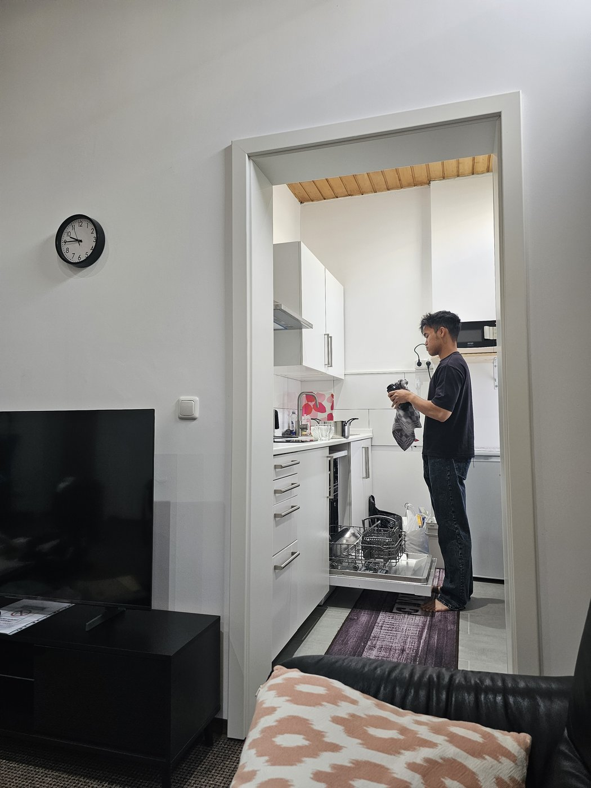
Yang menarik justru bagian setelah makannya. Check out dari apartemen sewaan itu bukan menyerahkan kunci di lobi. Piring dicuci, mesin cuci piring dikosongkan, sampah dibuang ke tongnya masing-masing, dan tempat tidur dirapikan seadanya. Aturannya sama seperti dapur bersama di Salzburg dua hari lalu: tinggalkan seperti waktu kamu datang. Bedanya, di sini tidak ada orang yang mengawasi. Itu justru yang bikin kebiasaannya kelihatan.
Hari kesebelas, dan kopernya yang bicara
Pilihannya sebenarnya terbuka. Munich cuma setengah jam, dan hari ini hari kerja — museum buka, Marienplatz buka. Tapi yang menang bukan itu. Yang menang koper.
Di Hari 5 ada satu tips yang ditulis dengan yakin di halaman ini: jangan bawa baju untuk enam belas hari, bawa untuk sepekan, lalu sisipkan satu hari mencuci di tengah rute. Itu ditulis waktu laundry pertama di Wina, hari kelima. Sekarang hari kesebelas — enam hari sejak cucian terakhir — dan masih ada lima hari di Inggris yang menunggu. Kalau hari mencuci kedua tidak diselipkan hari ini, dia akan menagih di London, kota tempat satu jam waktu luang jauh lebih mahal.
Masalahnya, apartemennya sudah di-check out. Jadi yang dicari laundry layan-diri — dan yang ketemu, yang buka dan cukup besar, ternyata bukan di kota tempat kami menginap. Dia di Freising, kota sebelah.
Freising ini bukan kota sembarangan, meski namanya jarang muncul di rencana perjalanan siapa pun. Dia kota tua di tepi Sungai Isar, keuskupannya berdiri sejak abad ke-8, dan di bukit Weihenstephan di dalam kotanya berdiri pabrik bir yang mengklaim diri tertua di dunia yang masih beroperasi — hitungannya dari tahun 1040. Dan satu hal lagi yang jarang disadari orang yang mendarat di sini: bandara “Munich” itu tidak di Munich. Dia berdiri di dataran sekitar 30 kilometer di timur laut pusat kota, tepat di sebelah Freising. Jadi kota tempat kami mencuci baju hari ini adalah kota yang dilewati semua orang dan tidak dilihat siapa pun.
Papan biru, kode zona, dan hitungan mundur dua jam
Mobil diparkir di tepi jalan permukiman, beberapa langkah dari laundrynya — di depan rumah bernomor 18 dengan pagar tanaman yang dipangkas rata dan gerbang besi melengkung. Bukan gedung parkir, bukan pelataran mal. Parkir jalanan biasa, jenis yang paling sering bikin turis kena denda.
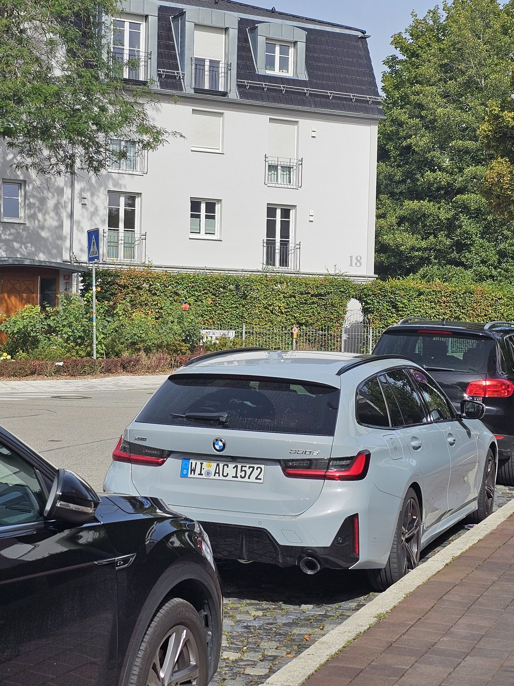
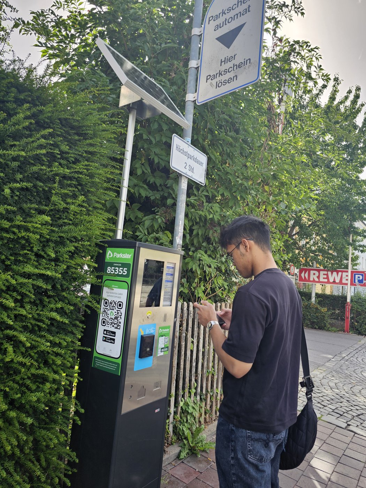
Kiri: tempatnya difoto sebelum ditinggal — kebiasaan kecil yang beberapa kali menyelamatkan dua puluh menit. Kanan: mesin karcisnya, bertenaga surya, dengan papan REWE terlihat di seberang jalan.
Di tiang di atas mesin ada dua papan, dan dua-duanya harus dibaca. Yang biru bertuliskan Parkscheinautomat dengan panah dan kalimat Hier Parkschein lösen — beli karcis parkir di sini. Yang putih di bawahnya lebih penting lagi: Höchstparkdauer 2 Std. — maksimal parkir dua jam.
Kalimat kedua itu yang mengubah bentuk hari ini. Bukan soal uangnya; soal dua jam itu jadi jam pasir untuk cucian. Mesin cuci tidak peduli papan parkir, jadi urutannya harus dibalik: masukkan cucian dulu, baru cari makan, lalu balik sebelum waktunya habis.
Mesinnya sendiri jenis baru: panel surya kecil di atas tiang, tombol START kuning, lubang koin, dan — ini yang menyelamatkan orang asing — pembaca kartu nirsentuh. Di badannya ditempel stiker hijau besar bertuliskan ZONENCODE 85355, yaitu kode pos Freising, plus dua kode QR untuk mengunduh aplikasi Parkster.
Jadi sebenarnya ada dua cara bayar, dan pendatang sebaiknya tahu dua-duanya:
Yang ternyata mesin industri, dan yang mencucinya bukan cuma turis
Bangunannya biru muda, dua lantai, dengan papan kecil di atas etalase: SB-Waschsalon. SB itu singkatan Selbstbedienung — layan diri. Di kaca depannya tertulis dua kata yang menjelaskan seluruh isinya: waschen · trocknen. Mencuci, mengeringkan.
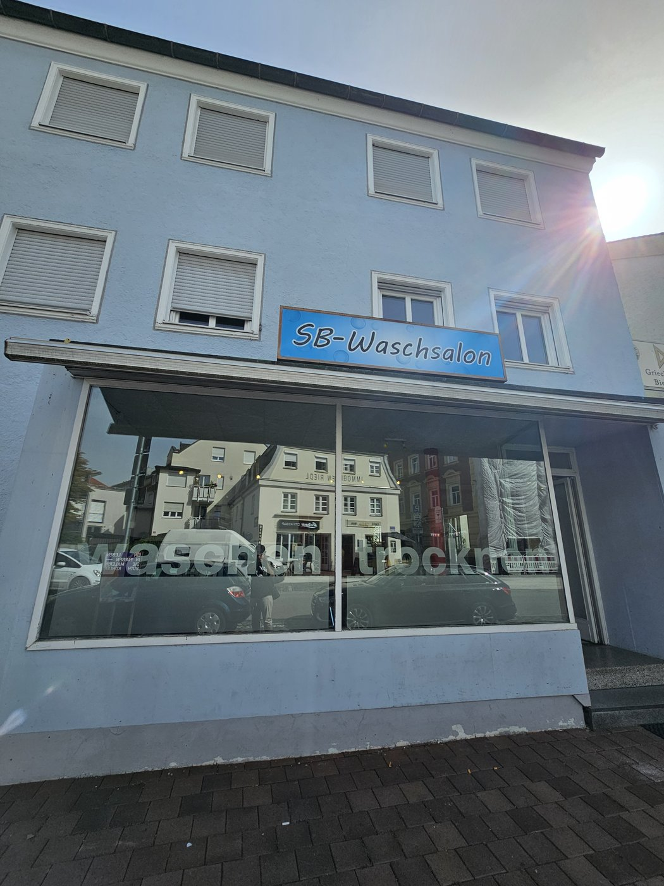
Yang di dalam bukan yang dibayangkan. Ini bukan deretan mesin rumahan yang dijejer — ini mesin industri: badan stainless setinggi dada, pintu bundar tebal seperti pintu kapal, dan panel hitam penuh angka. Di panelnya ada nomor unit (WM 4/3), lubang kunci pemutar, deretan sembilan program bergambar bak cuci, dan layar hijau kecil yang saat itu menunjukkan tiga angka: 28° · 52 · 15 — suhu, menit, nomor program.
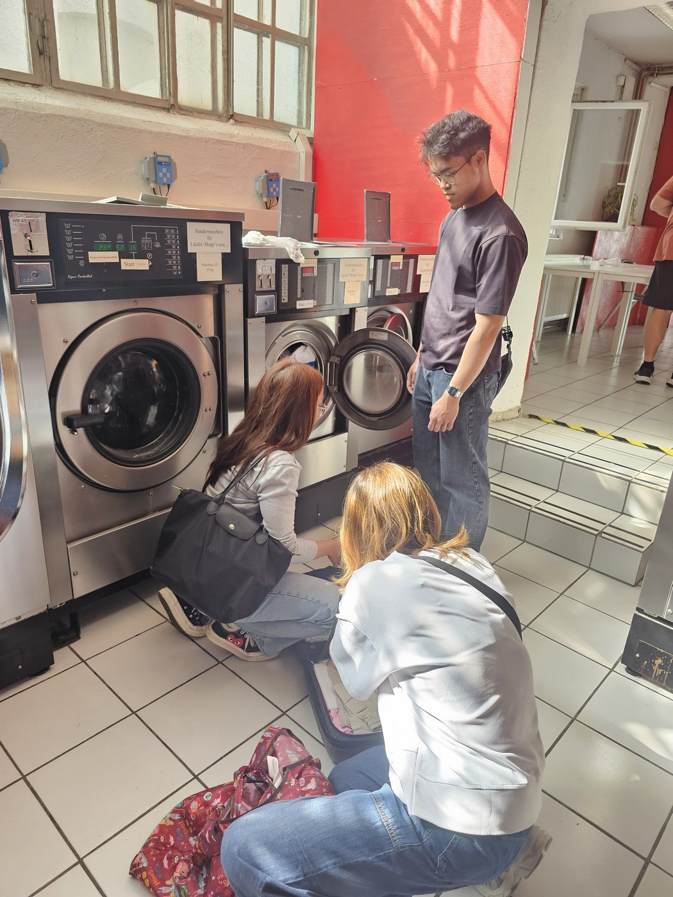
Dua detail di panel itu menjelaskan tempat ini lebih baik daripada papan namanya.
Pertama, ada kertas tempel di sebelah kanan panel: Sondermaschine für Läufer/Mopp’s usw… — mesin khusus untuk karpet pelari, kain pel, dan sejenisnya — dengan keterangan Maschine 15, 15 kg. Artinya tempat ini bukan fasilitas turis. Yang datang ke sini juga warga sekitar yang mencuci karpet lorong dan kain pel, barang yang tidak muat di mesin apartemen mana pun.
Kedua, ada kertas kecil bertuliskan Preise an Zentrale gültig — harga berlaku di konter pusat. Jadi tidak ada koin yang dimasukkan ke tiap mesin. Kamu pilih mesin, lalu bayar di satu titik untuk semuanya. Sistem yang sama sekali berbeda dengan laundry di Wina di Hari 5, yang mesinnya mencuci sekaligus mengeringkan dalam satu tabung, 75 menit, sekali bayar.
Pelajarannya buat pelancong sederhana: tidak ada satu model laundry layan-diri Eropa. Yang selalu sama cuma alurnya — masuk, pilih mesin, bayar, pergi, kembali. Yang beda-beda: harganya di mana, koinnya di mana, dan mesin keringnya terpisah atau tidak.
Hot Bar: €1,79 per 100 gram
Mesin jalan, jam parkir jalan. Yang bisa dilakukan cuma satu: jalan kaki ke REWE di ujung jalan — supermarket yang papan merahnya sudah kelihatan dari mesin karcis parkir tadi.
Dan di dalamnya ada satu bagian yang harusnya lebih sering masuk panduan perjalanan: Hot Bar. Sebuah etalase panjang berlampu, kacanya bertuliskan Heiße Snacks, dengan papan kecil di ujungnya: SELBSTBEDIENUNG · Hot Bar · Selfservice. Isinya makanan Bavaria harian: sosis, potongan schnitzel bertepung roti, irisan daging panggang, dan perkedel daging pipih yang di Bavaria disebut Fleischpflanzerl — bukan Frikadelle seperti di Jerman utara. Semuanya berjajar di nampan logam seperti etalase kue, dengan penjepitnya masing-masing.
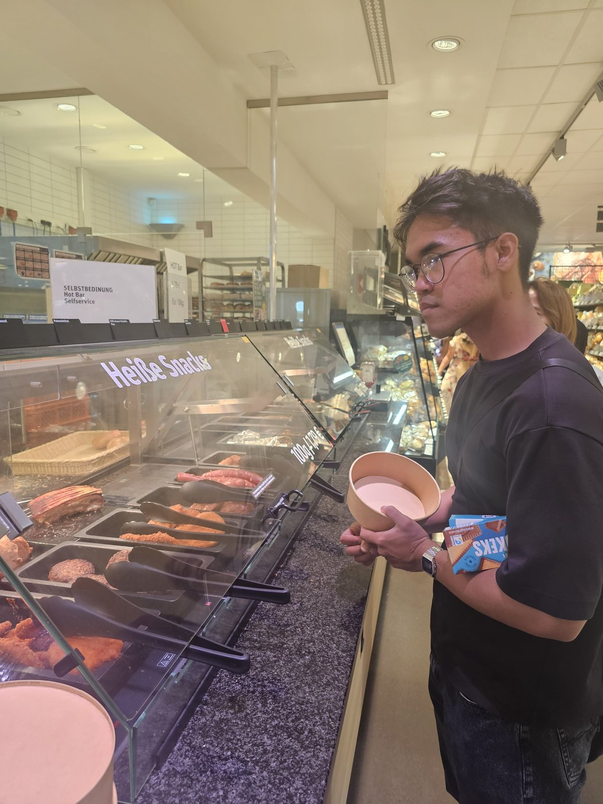
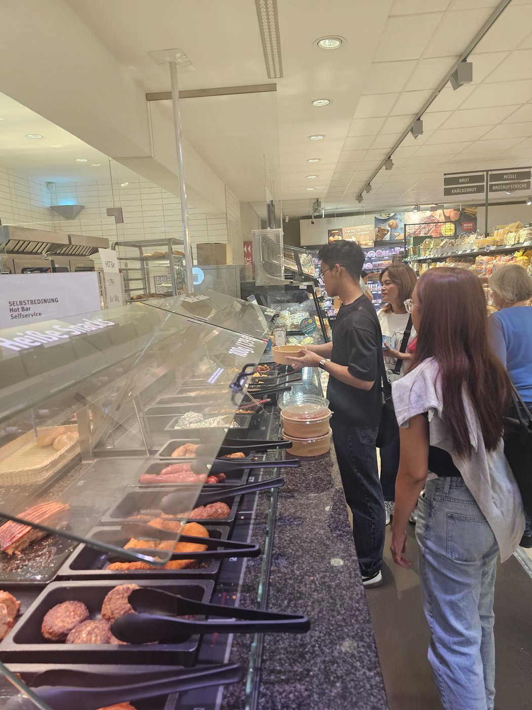
Mangkuk kertas bertutup ditumpuk di atas etalase, penjepitnya menggantung di tiap nampan. Tidak ada yang melayani, dan memang tidak perlu.
Cara kerjanya persis seperti namanya: ambil mangkuk kertas, ambil penjepit, isi sendiri. Tidak ada porsi, tidak ada menu, tidak ada nomor meja. Harganya satu baris saja, dicetak di kaca etalase: 100 g | €1,79.
Angka itu terasa akrab, karena kemarin persis begitu juga. Di Bräustüberl Andechs, daging babi panggangnya juga ditimbang per 100 gram, bukan dijual per piring. Dua tempat yang sama sekali berbeda kelas — biara berumur ratusan tahun di puncak bukit, dan supermarket di pinggir jalan — memakai satuan yang sama.
Dan buat pelancong berempat, sistem itu punya kelebihan yang nyata: kamu membayar persis sebanyak yang kamu ambil. Yang lapar ambil banyak, yang tidak lapar ambil sedikit, dan tidak ada satu pun porsi yang berakhir di tempat sampah karena kebesaran. Ditambah sekotak biskuit cokelat merek supermarket itu sendiri untuk di jalan, dan makan siang berempat selesai tanpa masuk restoran, tanpa menunggu meja, dan tanpa tip.
Rak pemindai, dan satu kalimat oranye yang berani
Di dekat pintu masuk berdiri satu rak yang, kalau dipikir agak lama, sebenarnya cukup mengejutkan: puluhan pemindai genggam berjajar rapi di dudukan pengisi daya, layarnya menyala semua bertuliskan Scan&Go.
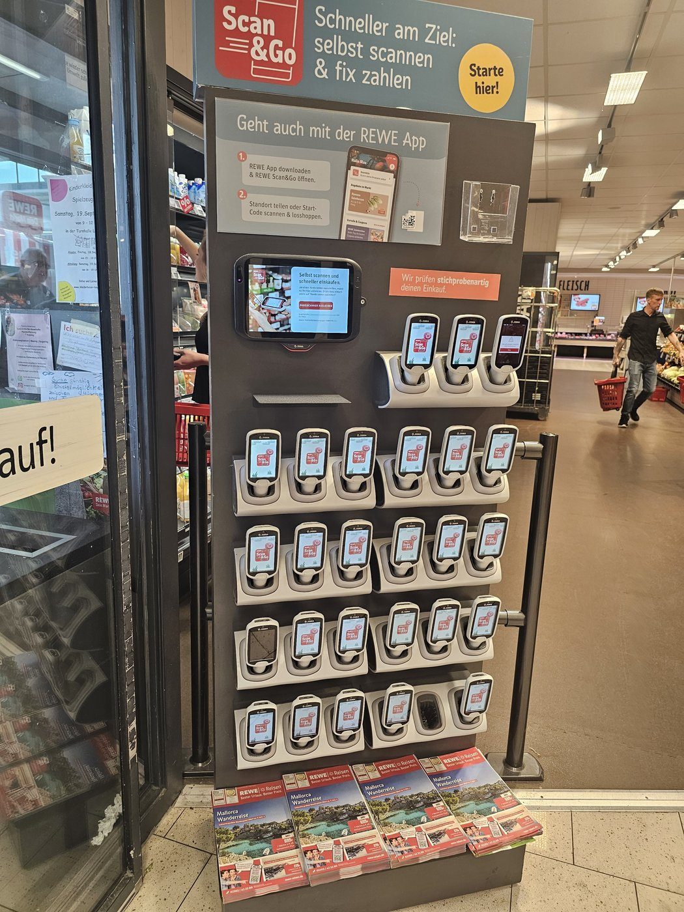
Idenya: kamu pinjam satu pemindai, lalu memindai sendiri tiap barang saat memasukkannya ke keranjang, dan di akhir tinggal membayar tanpa perlu membongkar isi belanjaan di kasir. Layar di rak itu menjelaskannya dalam dua kalimat — “Selbst scannen und schneller einkaufen”, pindai sendiri dan belanja lebih cepat — dengan satu tombol besar di bawahnya: Handscanner ausleihen, pinjam pemindai. Yang tidak mau memakai alatnya bisa memakai aplikasi supermarketnya sendiri: unduh, pindai kode mulai di pintu, lalu jalan.
Tapi yang paling menarik bukan teknologinya. Yang paling menarik satu papan oranye kecil di sebelahnya, dengan kalimat yang di banyak tempat lain tidak akan berani ditulis sebesar itu:
Kalimat itu mengakui dua hal sekaligus. Pertama, sistem ini memang bisa dicurangi. Kedua, mereka tetap memakainya. Karena hitungannya bukan soal moral, tapi soal ongkos: memeriksa semua orang di kasir itu mahal — butuh orang, butuh waktu, butuh antrean — dan kerugian dari sebagian kecil yang curang ternyata lebih murah daripada itu semua. Jadi yang dibangun bukan sistem yang tidak bisa dicurangi, tapi sistem yang berdiri di atas asumsi bahwa mayoritas orang jujur, ditambah pemeriksaan acak secukupnya supaya asumsi itu tetap benar.
Di kaca pintu masuknya, satu lapis lagi dari kota kecil ini menempel: papan pengumuman warga. Ada pengumuman bursa baju dan mainan anak bekas di gedung olahraga pertengahan September, ditulis serapi prosedur kantor: barang dititipkan Jumat sore jam 15–18, dijual Sabtu pagi jam 9–12, hasilnya diambil Sabtu petang jam 18–19 — dengan tempelan kuning di sudutnya: kopi dan kue disediakan taman kanak-kanak setempat. Ada selebaran jasa perawatan. Dan ada satu kertas tulisan tangan: seseorang mencari tempat penitipan yang murah di antara Munich dan Freising. Supermarket di sini bukan cuma tempat belanja; dia juga papan pengumuman kampung.
Jam 11.30, dan tidak ada meja
Makanannya sudah panas di mangkuk kertas, cucian masih berputar, dan jam parkir masih jalan. Jadi solusinya yang paling masuk akal: cari bangku.
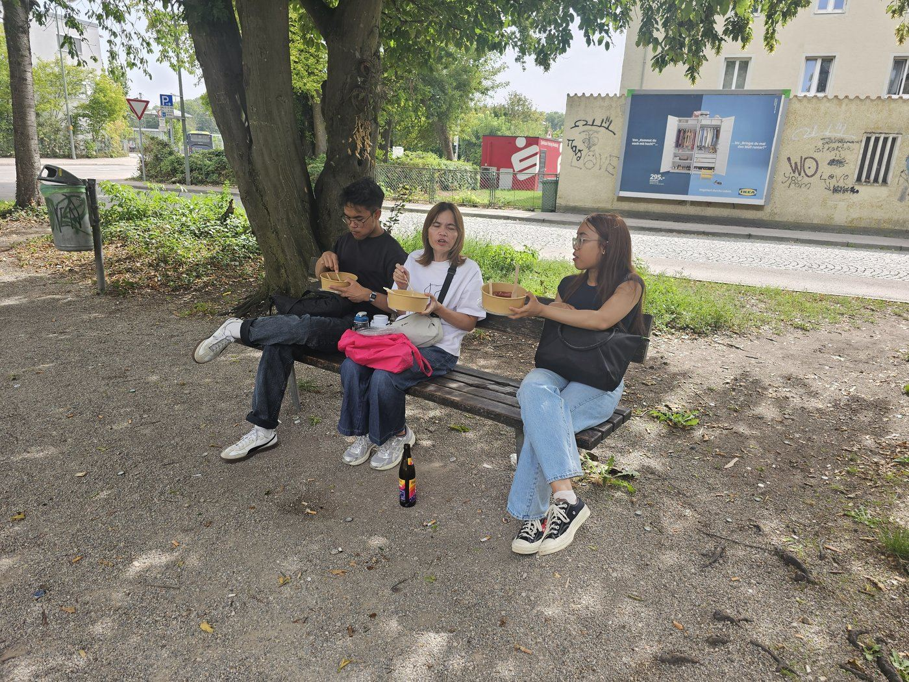
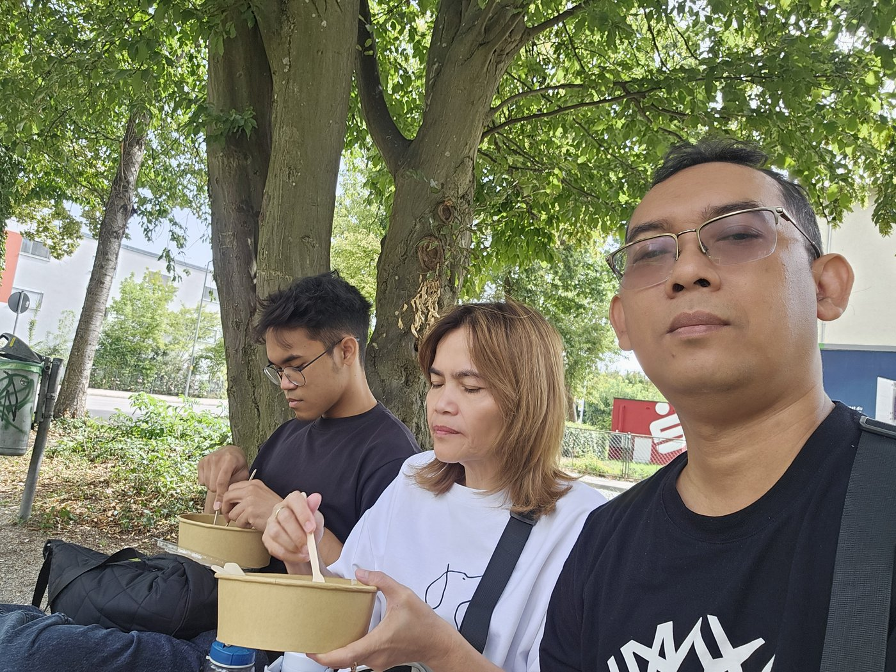
Bangku umum, kerikil, dan pohon. Di seberang jalan: papan iklan lemari IKEA seharga €295 dan sebuah kantor bank. Bukan pemandangan yang masuk brosur.
Ini bagian dari road trip yang jarang difoto orang, padahal porsinya besar: separuh perjalanan panjang itu duduk di tempat umum sambil makan dari wadah kertas, di antara dua urusan yang harus selesai. Tidak ada pelayan, tidak ada suasana, tidak ada apa-apa yang bisa diceritakan sebagai pengalaman kuliner. Cuma makanan panas, bangku kosong, dan tiga puluh menit yang perlu diisi.
Dan seperti biasa di perjalanan ini, hal yang paling layak dicatat justru muncul waktu tidak ada yang mencarinya — kali ini dalam bentuk sebuah papan besi di pinggir petak mawar, beberapa langkah dari bangku itu.
Dan memberinya nama Latin
Judulnya, dicetak besar-besar di atas foto lantai hutan: Unbeliebte Naturbewohner — penghuni alam yang tidak disukai. Lalu di bawahnya, dalam kurung dan huruf lebih kecil, seluruh lelucon dan seluruh maksudnya sekaligus: “…yang sayangnya belum terancam punah, beserta waktu urainya.”
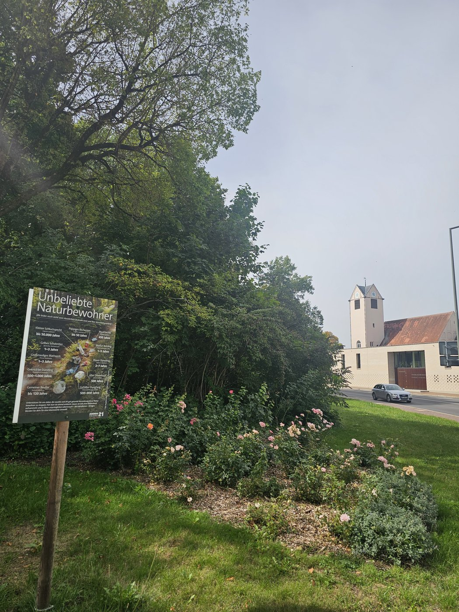
Isinya sebuah foto sampah yang tercecer di lantai hutan — botol, kaleng, puntung, tisu, popok — dan tiap benda ditarik garis ke sebuah nama, persis seperti papan pengenal satwa di kebun binatang. Tiap sampah diberi nama spesies dalam bahasa Jerman, nama Latin palsu, dan angka: berapa lama dia terurai.
Ini daftarnya, diurutkan dari yang paling lama bertahan:
Nama-namanya lucu kalau dibaca pelan. Schluckspecht itu sebutan untuk peminum berat — dan nama Latinnya, Liquior cadaveri, kira-kira “jenazah minuman keras”. Rotzling berasal dari kata ingus. Presse blablabla untuk koran adalah sindiran yang tidak berusaha halus. Dan kantong plastik dinamai Sackuli plasticus, yang terdengar cukup ilmiah sampai kamu sadar itu cuma “kantong plastik” yang dipakaikan akhiran Latin.
Satu yang paling mungkin bikin orang Jerman tersenyum: botol plastik diberi nama Latin Trapattoni babbela. Giovanni Trapattoni adalah pelatih Italia yang pada 1998, saat melatih Bayern München, meledak di depan wartawan dengan bahasa Jerman patah-patah dan melahirkan satu kalimat yang sampai sekarang jadi bahan lelucon nasional: “Flasche leer!” — botolnya kosong. Botol kosong, di papan ini, akhirnya dapat nama ilmiahnya.
Di bagian bawah papan, nadanya kembali serius tanpa berhenti bercanda: “Bantu kami menghentikan perkembangbiakan penghuni alam ini yang begitu cepat dan sering tersamar rapi. Sekali ketahuan, mereka bisa dipungut tanpa perlawanan dan dikembalikan ke habitat aslinya — tempat sampah.”
Yang memasangnya bukan dinas kebersihan, melainkan Agenda 21 Freising — kelompok kerja lingkungan tingkat kota. Namanya turunan dari Local Agenda 21, program yang lahir dari KTT Bumi Rio 1992 dan diadopsi ribuan pemerintah kota di Eropa sebagai kerja lingkungan skala kelurahan.
Satu patung di petak mawar, dan garis keturunannya sampai Vatikan
Beberapa langkah dari papan tadi, di antara mawar dan lavender, berdiri patung beruang seukuran badan manusia, dicat biru kehijauan dengan lukisan bunga dan bangunan kota, memegang papan bertuliskan ROSENSTADT FREISING — Freising, kota mawar.
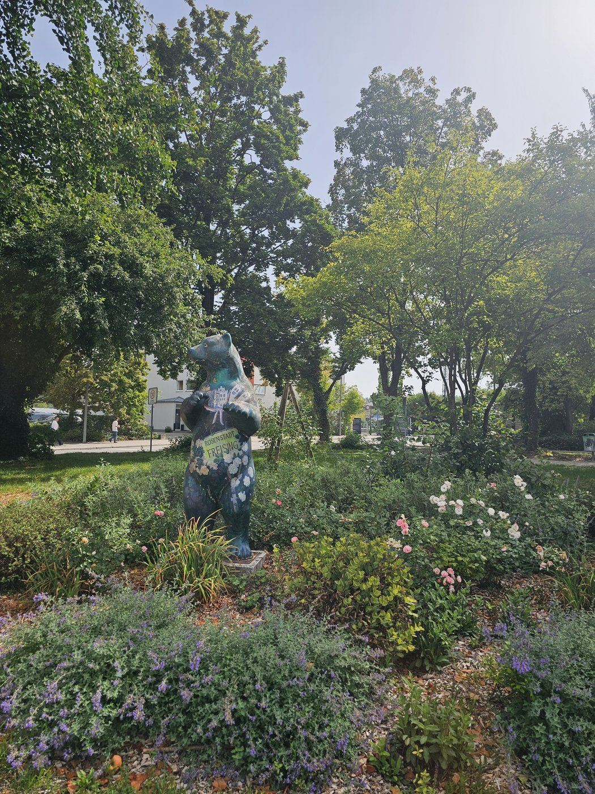
Mawarnya jelas — dia ada di sekeliling patungnya. Beruangnya yang perlu dijelaskan, dan penjelasannya berumur seribu tiga ratus tahun.
Santo Korbinian adalah uskup pertama Freising, abad ke-8. Ceritanya: dalam perjalanan ke Roma, seekor beruang menerkam kuda beban miliknya. Korbinian tidak membunuh beruang itu — dia menyuruh beruang itu memikul beban kudanya sampai Roma, lalu melepaskannya begitu sampai. Beruang berbeban itu jadi lambang keuskupan ini.
Dan lambang itu tidak berhenti di kota kecil ini. Keuskupan Agung München und Freising memakainya sampai sekarang — dan ketika Joseph Ratzinger, yang pernah menjabat uskup agung di sana, terpilih jadi Paus Benediktus XVI, beruang berbeban itu ikut naik ke lambang kepausannya.
Jadi patung bercat cerah yang kami lewati di antara laundry dan supermarket itu punya garis keturunan yang berakhir di Vatikan. Dan itu, sebenarnya, ringkasan yang cukup jujur tentang bepergian di Eropa Tengah: kota mana pun yang kamu singgahi karena alasan paling membosankan sekalipun — mencuci baju, misalnya — hampir selalu punya satu cerita berumur seribu tahun yang menunggu di tepi trotoar.
Kertas, tiga warna kaca, dan kotak baju bekas — semuanya di parkiran supermarket
Di ujung pelataran REWE, tepat di bawah papan merahnya, berdiri deretan kontainer yang di Indonesia jarang punya padanan langsung. Yang pertama kotak logam abu-abu besar berlabel ALTPAPIER — kertas bekas. Di badannya masih terbaca cap pabrik pembuatnya dari kota sebelah, dan stiker perusahaan pengangkutnya lengkap dengan lambang kabupaten.
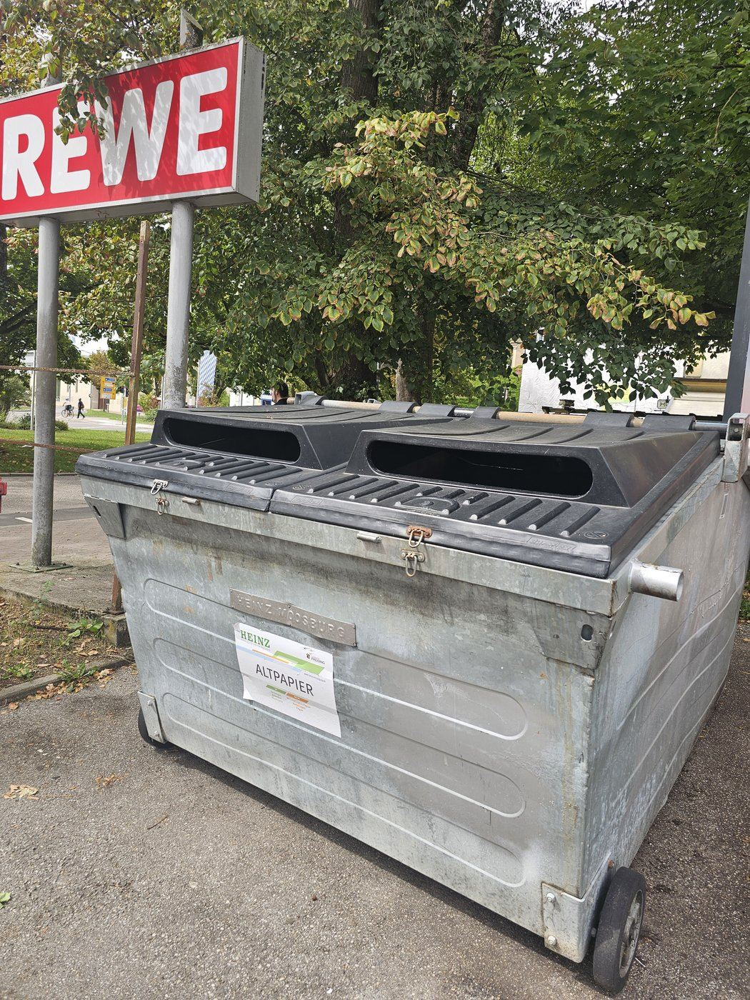
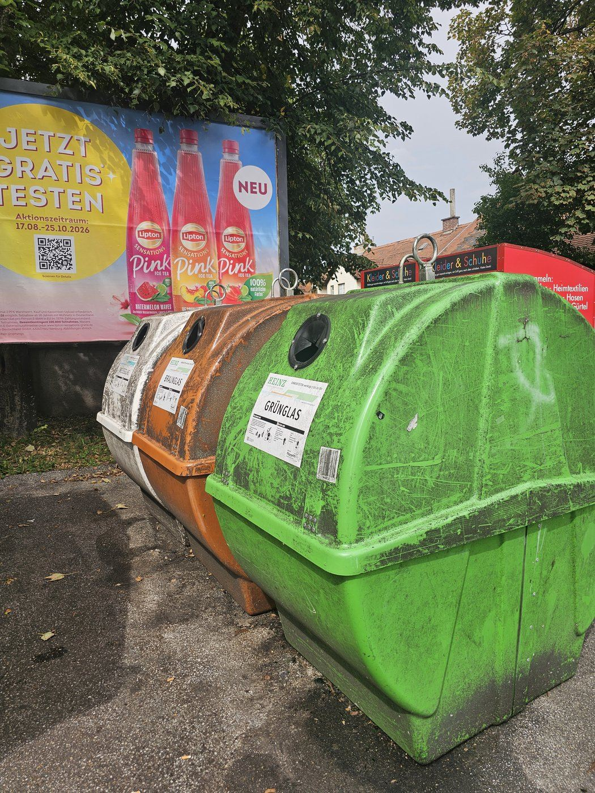
Kiri: kertas. Kanan: kaca, dipisah tiga warna — Grünglas, Braunglas, dan kaca bening — plus kotak merah untuk baju dan sepatu bekas.
Pemisahan kaca menurut warna itu bukan kerapian tanpa alasan. Pewarna kaca tidak bisa dihilangkan waktu dilebur. Kaca hijau yang dilebur akan tetap jadi kaca hijau; sedangkan kaca bening — yang paling dibutuhkan industri karena bisa dijadikan apa saja — akan langsung turun kelas begitu satu botol hijau atau cokelat masuk ke muatannya. Jadi tiga lubang di parkiran itu, sebenarnya, tiga mutu bahan baku yang berbeda harganya. Aturan praktisnya di Jerman: kalau warnanya bukan hijau, cokelat, atau bening — botol biru, misalnya — masukkan ke yang hijau, karena hijau paling toleran terhadap campuran.
Satu hal lagi yang tidak tertulis di kontainernya tapi berlaku di seluruh negeri: membuang kaca itu ada jamnya. Suara botol pecah termasuk kebisingan yang diatur, jadi jangan menuang sekantong botol ke tong ini pada malam hari, saat jam istirahat siang, atau hari Minggu. Ini kesalahan yang khas dilakukan pendatang, dan tetangga sekitar akan mengingatkanmu.
Di sebelah tong kaca ada kotak merah tinggi bertuliskan Kleider & Schuhe — baju dan sepatu. Di badannya ada daftar apa saja yang diterima: pakaian, tekstil rumah tangga, celana, ikat pinggang. Bukan tempat sampah; kotak sumbangan. Yang masih layak pakai disalurkan, yang tidak diolah jadi bahan lain.
Dan kalau diingat lagi, pengumuman bursa baju anak bekas yang menempel di pintu supermarket tadi sebenarnya barang yang sama dengan kotak merah ini — cuma jalurnya beda. Yang satu dijual ulang oleh tetangga sendiri di gedung olahraga, yang satu dimasukkan ke kotak dan tidak perlu ditanyakan lagi. Di kota sekecil ini, baju bekas punya dua pintu keluar, dan tidak satu pun namanya tempat sampah.
Dan sementara kami memotret, infrastrukturnya kebetulan sedang bekerja. Sebuah truk berlengan derek masuk membawa kontainer biru besar, berhenti persis di sudut itu, dan mulai mengangkat. Bagian yang biasanya tidak dilihat siapa-siapa — karena biasanya terjadi jam enam pagi.
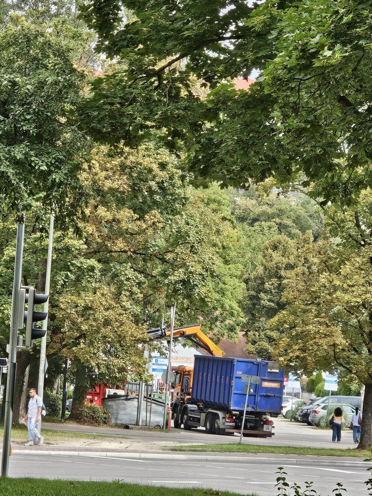
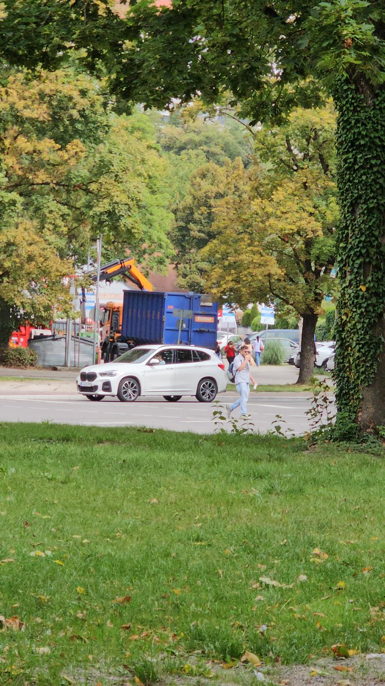
Dilihat dari bangku tempat kami makan tadi: jalan, titik daur ulang, truknya, dan hari kerja yang jalan terus.
Kalau dirangkai dengan kemarin, polanya jadi kelihatan. Hari 10 dimulai di Austria dengan mesin di pintu supermarket yang membeli kembali botol plastik kami seharga dua puluh lima sen sebiji, lalu ditutup malamnya — sudah di Jerman — dengan deretan tong kaca di tepi tempat parkir. Hari ini, di kota Jerman yang lain lagi, urusan yang sama muncul untuk ketiga kalinya dalam dua hari, dan kali ini paling lengkap: kertas, tiga warna kaca, dan baju bekas, semuanya dalam satu pelataran.
Dan letaknya itu yang paling pintar. Semua ini bukan di kantor kelurahan, bukan di TPA di pinggir kota — dia di parkiran supermarket, tempat orang toh sudah datang setiap minggu. Sistem yang benar bukan sistem yang memaksa orang jadi rajin; dia sistem yang menaruh pilihan benar tepat di jalan yang sudah dilewati orang.
Dua jam yang tidak ada fotonya
Cucian diambil, dilipat, dan masuk koper dalam keadaan yang tidak akan terulang sampai perjalanan ini selesai: bersih semua, sekaligus. Karcis parkir masih berlaku, dan itu terasa seperti kemenangan kecil.
Setelah itu ada lubang dua jam di catatan hari ini — tidak ada satu pun foto antara jam dua belas kurang dan jam dua lewat. Isinya bisa ditebak dan memang tidak menarik: memasukkan empat koper ke bagasi untuk terakhir kalinya, dan menyetir ke bandara.
Parkir, kunci ditinggal di dalam, pergi
Ini bagian yang paling bikin kaget buat orang Indonesia, dan justru karena tidak terjadi apa-apa.
Di bandara ada lantai parkir khusus untuk pengembalian mobil sewaan, dan jalan ke sana ditandai papan besar bertuliskan Mietwagenrückgabe — Car Rental Return — For All Companies, dengan deretan tanda panah dan daftar perusahaannya: Sixt, Europcar, Avis, Hertz, Enterprise, OK Car. Semuanya satu arah, satu lantai. Kamu tidak perlu tahu kantornya di mana — cukup ikuti panahnya.
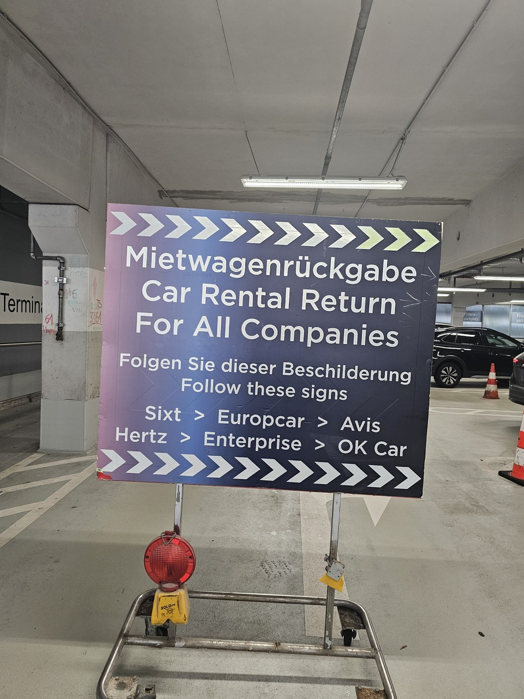
Lalu prosedurnya, seluruhnya: parkir di kaveling bernomor, keluarkan barang, tinggalkan kuncinya di dalam mobil, dan pergi. Sudah. Tidak ada petugas yang mengitari bodi sambil membawa lembar periksa, tidak ada yang menghitung goresan, tidak ada yang mengecek jarum bensin sambil kamu berdiri menunggu. Mobil yang sebelas hari terakhir dipakai menyeberang tiga negara ditinggal begitu saja di lantai beton, seperti memarkir mobil sendiri di mal.
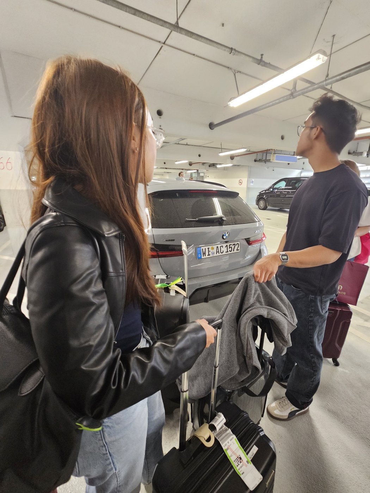
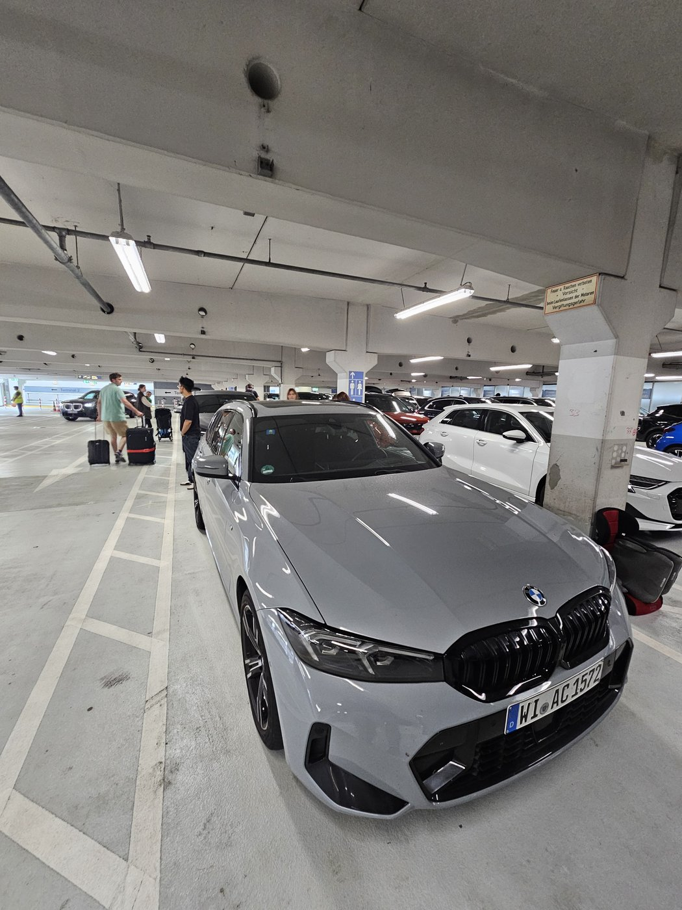
Bongkar terakhir, jam 13.45. Setelah ini bagasi mobil tidak dipakai lagi sampai perjalanan selesai.
Enaknya jelas: cepat, dan tidak ada perdebatan. Risikonya juga jelas, dan ini yang perlu disiapkan: karena tidak ada yang memeriksa waktu kamu menyerahkan, tidak ada juga saksi yang bisa membenarkan versimu kalau nanti ada tagihan yang muncul — goresan yang katanya baru, bahan bakar yang katanya kurang, atau denda yang datang berminggu-minggu kemudian.
Jadi ganti petugasnya dengan kamera. Sebelum meninggalkan mobil: foto keempat sisinya, kabin dan bagasinya, panel jarum bahan bakar berikut odometernya, dan nomor kavelingnya. Semuanya sudah bertanggal dan berjam sendiri di data fotonya. Lima menit sekarang, dan kamu punya bukti yang tidak bisa dibantah nanti.
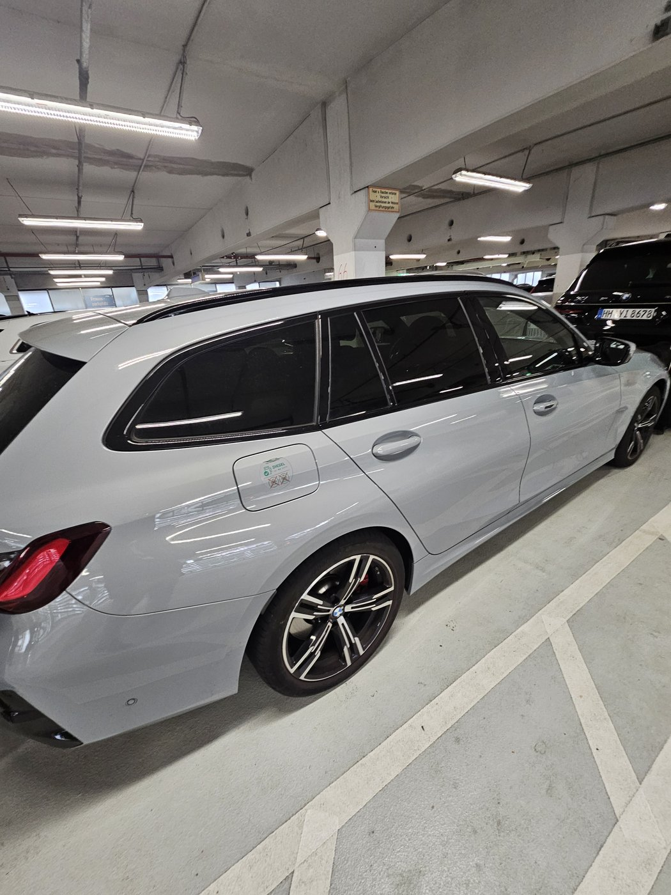
Ada satu goresan yang dibawa pulang dari Hallstatt
Karena tidak ada yang memeriksa, tidak ada juga yang bertanya. Padahal ada yang bisa ditanyakan.
Balik ke Hari 8, dalam perjalanan menuju Hallstatt. Jalannya meliuk-liuk dan sempit — jenis jalan pegunungan yang di satu sisinya tebing atau pembatas, di sisi lain jurang atau danau, dan lebarnya terasa selalu kurang beberapa puluh sentimeter dari yang kamu mau. Waktu itu saya yang menyetir.
Lalu terjadi: badan mobil menyerempet pembatas jalan.
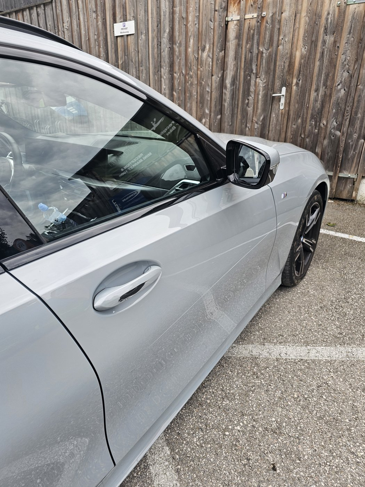
Dan begitu mesin dimatikan, yang jalan di kepala cuma satu: berapa ini nanti. Mobil sewaan, merek Jerman, cat metalik, dan komponen yang harus diganti utuh — bukan didempul di bengkel pinggir jalan. Di Eropa, perbaikan seperti itu gampang menembus angka yang bikin sisa anggaran perjalanan terasa goyah. Belum lagi perusahaan sewa umumnya juga menagih hari-hari mobil tidak bisa disewakan selama diperbaiki.
Ternyata jawabannya: nol.
Waktu memesan mobil ini dari awal, Justin mengambil asuransi all risk — perlindungan penuh, bukan paket bawaan. Jadi goresan yang sudah dihitung-hitung nilainya sepanjang sisa hari itu tidak berujung tagihan sama sekali.
Ini bagian yang layak dibaca dua kali oleh siapa pun yang mau menyewa mobil di Eropa, karena istilahnya sering menyesatkan:
Satu hal lagi yang perlu dilakukan dan tidak boleh ditunda: laporkan kerusakannya ke perusahaan sewa begitu terjadi, sekalipun kamu sudah mengambil perlindungan penuh. Perlindungan itu menanggung biayanya, bukan menghapus kewajiban melapor — dan kerusakan yang baru ketahuan sendiri oleh mereka setelah mobil dikembalikan selalu lebih ribet daripada yang sudah dilaporkan sejak hari kejadian.
Jadi begitulah mobil ini ditinggalkan sore itu: dengan kunci di dalamnya, tanpa serah terima, dan dengan satu gagang pintu yang tidak lagi mulus. Tidak ada yang datang memeriksa, dan seandainya pun ada, jawabannya sudah dibeli sejak sebelas hari sebelumnya di halaman pemesanan.
Check-in, cetak label, tempel sendiri, timbang sendiri
Dari lantai parkir, jalan kaki lewat deretan konter penyewaan mobil, keluar sebentar ke udara terbuka, dan masuk ke Terminal 2 — terminal Lufthansa dan Star Alliance di Bandara Munich.
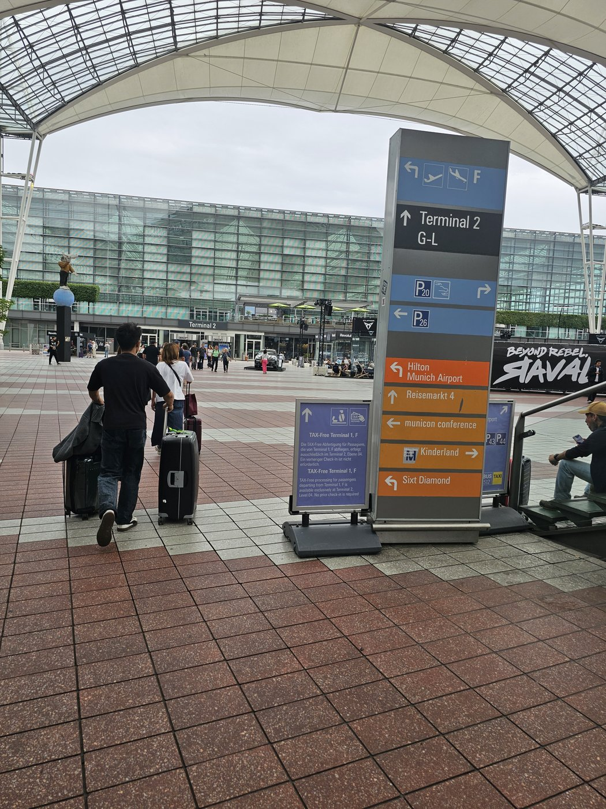
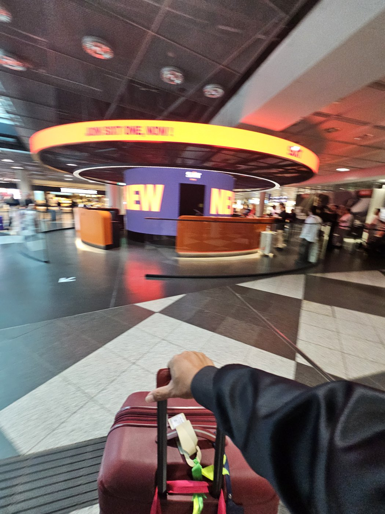
Kiri: papan penunjuk di luar, dengan atap tenda putih yang jadi ciri bandara ini. Kanan: lewat deretan konter rental — bagian yang sudah tidak ada urusannya lagi dengan kami.
Dan di sinilah bedanya paling terasa dengan Soekarno-Hatta. Tidak ada konter check-in dengan orang di baliknya. Yang ada deretan mesin, dan di atasnya papan bertuliskan Bordkarte · Gepäckanhänger — Boarding Pass · Baggage Tag.
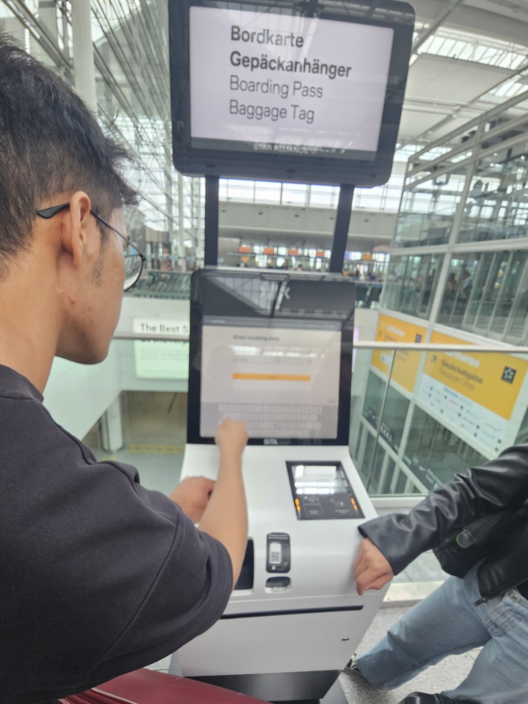
Perhatikan kata kedua di papan itu, karena itu yang biasanya bikin orang bingung pertama kali: mesin ini bukan cuma mencetak boarding pass. Dia juga mencetak label bagasimu — pita panjang berperekat dengan kode batang dan kode bandara tujuan.
Dan yang menempelkannya ke koper, ya kamu sendiri.
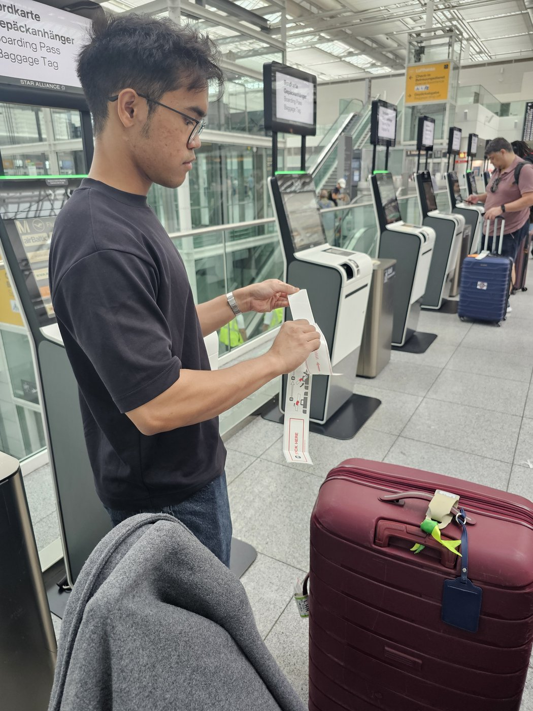
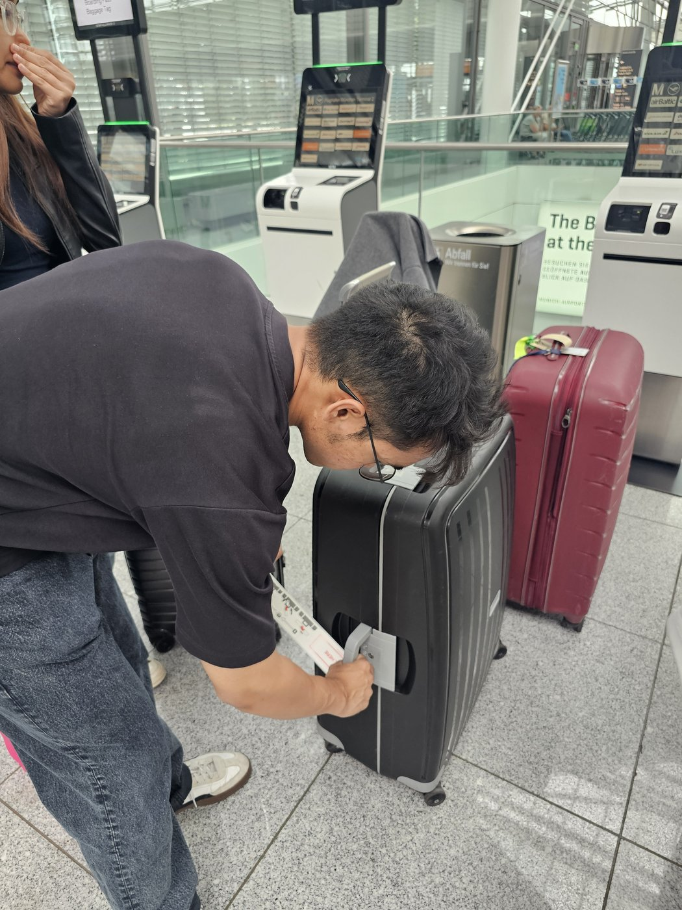
Ada tulisan STICK HERE di ujungnya. Lingkarkan di pegangan koper, rekatkan ujungnya ke ujung yang satu lagi, pastikan kode batangnya tidak terlipat. Tujuannya sudah tercetak di situ: LHR.
Baru setelah itu ke mesin drop bagasi: koper diangkat sendiri ke ban berjalan, layar menyapa “Herzlich willkommen”, dan timbangannya langsung menulis angkanya di pojok layar — 23,6 kg. Buat yang belum terbiasa, angka itu bikin jantung berhenti sebentar: batas bagasi tercatat kelas ekonomi di sebagian besar tiket Eropa adalah 23 kg per koper, dan mesin tidak bisa diajak berunding.
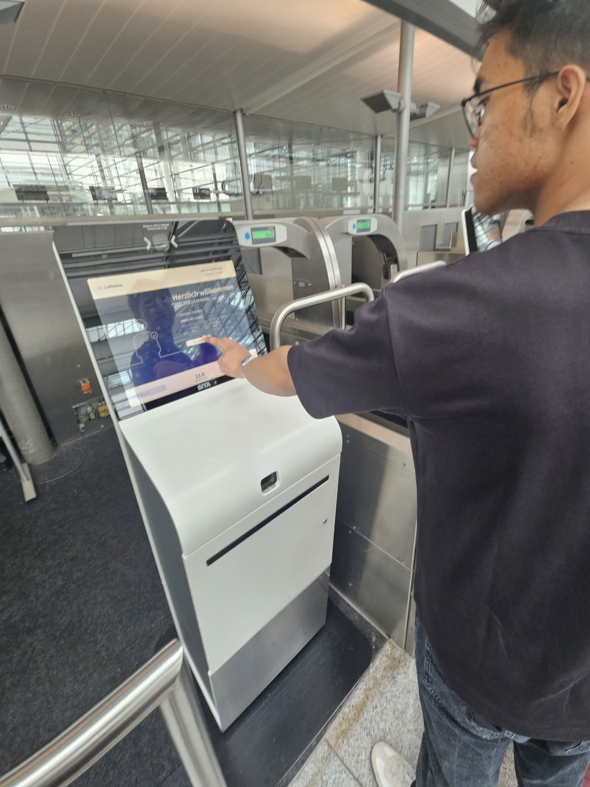
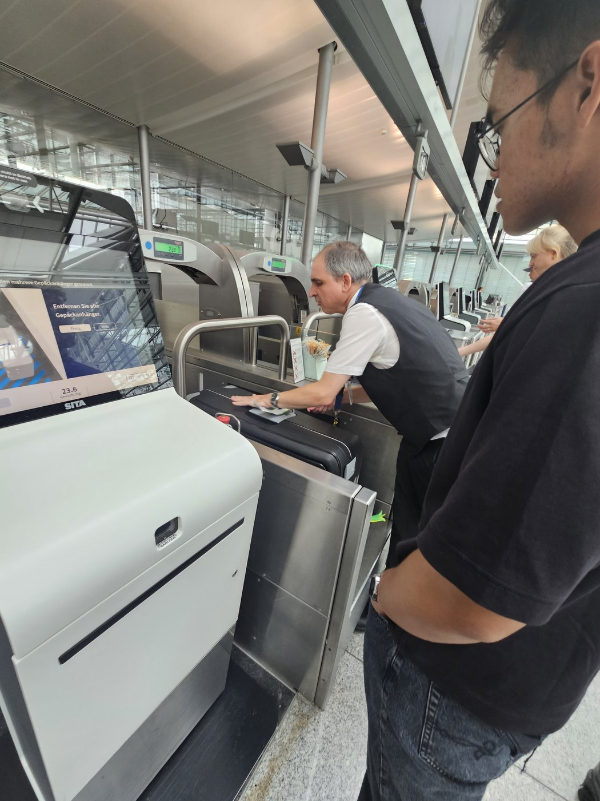
Kanan: mesinnya protes. Layarnya menulis “Entfernen Sie alte Gepäckanhänger” — lepas label bagasi yang lama. Petugas datang, dan itulah satu-satunya kali ada orang yang menyentuh koper kami.
Protes itu layak dicatat karena penyebabnya sepele dan sering terjadi: pemindai membaca semua kode batang yang menempel di koper, termasuk label dari penerbangan sebelumnya yang belum dicabut. Kalau ada lebih dari satu, mesin berhenti dan minta yang lama dibuang — kalau tidak, kopermu bisa dikirim ke kota yang salah.
Jadi kalau kopermu masih membawa sisa label perjalanan sebelumnya, cabut sebelum mengantre, bukan sesudah.
Dan gambaran besarnya begini: petugas di bandara ini tetap ada, tapi pekerjaannya berubah. Mereka bukan lagi orang yang melayani antrean satu per satu, melainkan orang yang datang kalau mesinnya berhenti. Selama semuanya lancar, kamu tidak akan bicara dengan siapa pun sejak turun dari mobil sampai masuk pemeriksaan.
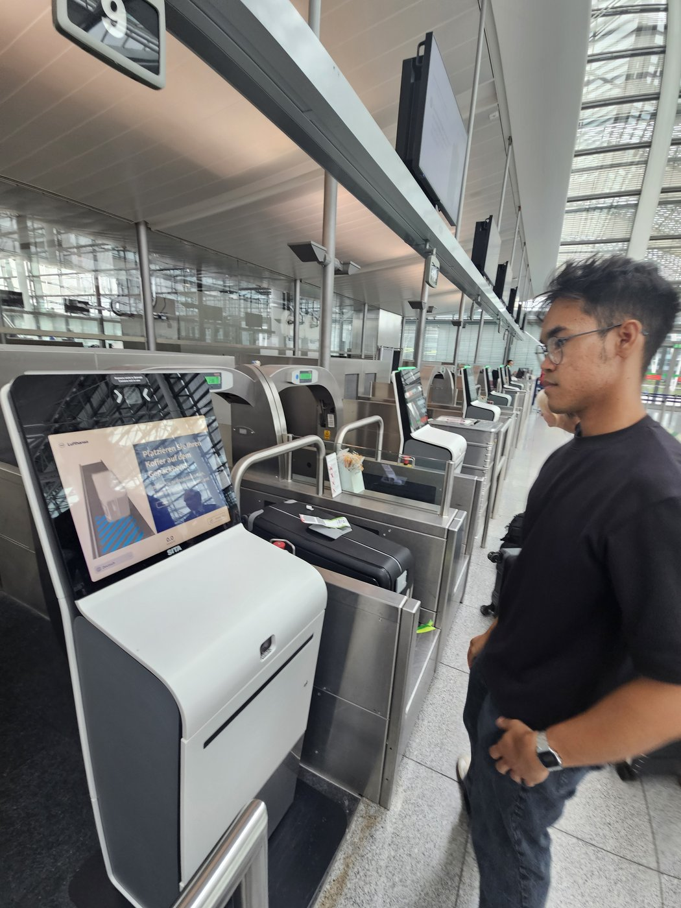
Korban kedua dari pembatalan semalam, dan ini yang paling mahal
Di Hari 7, sepulang dari outlet Parndorf, halaman ini menulis panjang soal tax refund untuk turis non-Uni Eropa: minta formulir di toko, minta stempel bea cukai saat meninggalkan Uni Eropa, baru uangnya cair. Waktu itu ada satu kalimat yang sengaja digantung: stempelnya harus diambil di titik keluar terakhir dari Uni Eropa.
Hari ini kalimat itu menagih — dan jawabannya tidak enak.
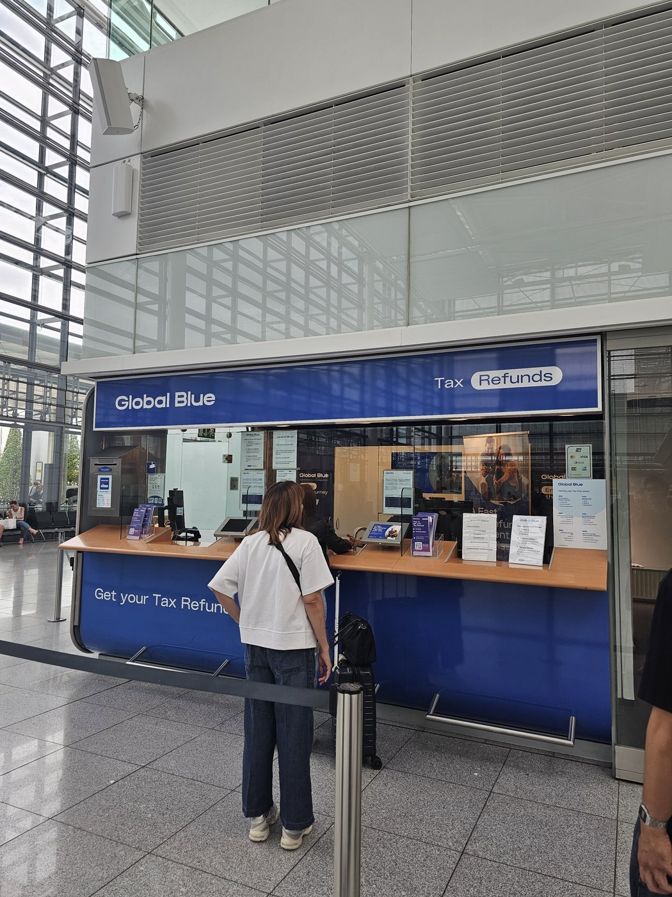
Jawaban di konter Munich singkat: urusannya bukan di sini, tapi di Frankfurt. Alasannya persis kalimat yang digantung tadi. Rute kami hari ini Munich → Frankfurt → London, dan Frankfurt masih Uni Eropa — jadi titik keluar terakhirnya di sana, bukan di bandara tempat kami berdiri sore itu.
Lalu di Frankfurt — dan ini bagian yang belum kami tahu waktu berdiri di konter sore itu — tidak ada waktunya sama sekali. Pesawat dari Munich molor hampir sejam, dan yang tersisa di Frankfurt cuma cukup untuk berpindah terminal sambil setengah berlari. Antre di konter bea cukai bukan pilihan yang pernah benar-benar ada.
Jadi hasilnya: tax refund-nya hangus. Formulir dari Parndorf itu tidak pernah dapat stempel, dan tanpa stempel dia cuma kertas.
Yang bikin ini layak dicatat panjang-panjang bukan uangnya, tapi rantai sebabnya — karena tidak satu pun mata rantainya kelihatan waktu kejadian.
Baca dari atas ke bawah, dan bentuknya jadi jelas: penerbangan yang dibatalkan semalam tidak cuma menghapus satu hari di London — dia juga memindahkan titik keluar kami dari Uni Eropa, dan itu yang membunuh klaim pajaknya. Satu pembatalan, dua kerugian, dan kerugian keduanya tidak pernah disebut di surat pemberitahuan mana pun.
Pelajarannya, buat siapa pun yang belanja di Eropa lalu terbang pulang lewat transit:
Titik keluar terakhirmu bukan sifat tetap perjalanan — dia ikut berubah setiap kali rutemu berubah. Jadi begitu penerbanganmu dijadwal ulang, jangan cuma mengecek jam berangkat dan nomor kursi. Cek juga: bandara mana sekarang yang jadi titik keluar terakhir dari Uni Eropa, dan apakah di sana masih ada waktu untuk mengantre bea cukai?
Kalau jawabannya tidak — dan sering kali begitu, karena rute pengganti hampir selalu lebih mepet — lebih baik tahu sejak awal bahwa klaimnya hangus, daripada membawa map berisi formulir sampai ke gerbang lalu menemukan sendiri bahwa dia sudah tidak ada gunanya.
Konsekuensi semalam yang baru terasa bentuknya hari ini
Di Hari 1, cerita ini dimulai di ruang kedatangan bandara ini juga: empat orang berkumpul dari tiga kota, lewat tiga penerbangan dan satu perjalanan kereta. Sebelas hari kemudian, di gedung yang sama, urutannya diputar balik.
Karena tiketnya dulu dipesan sendiri-sendiri, pembatalan semalam mencarikan pengganti untuk tiap orang secara terpisah — dan hasilnya tiga rute berbeda ke satu kota yang sama. Justin tetap langsung Munich–London. Annette memutar lewat Paris. Kami lewat Frankfurt. Berangkatnya jam berbeda, gerbangnya berbeda, dan pemeriksaannya masing-masing.
Jadi perpisahannya terjadi di depan gerbang otomatis, sambil bercanda soal siapa yang akan sampai lebih dulu.
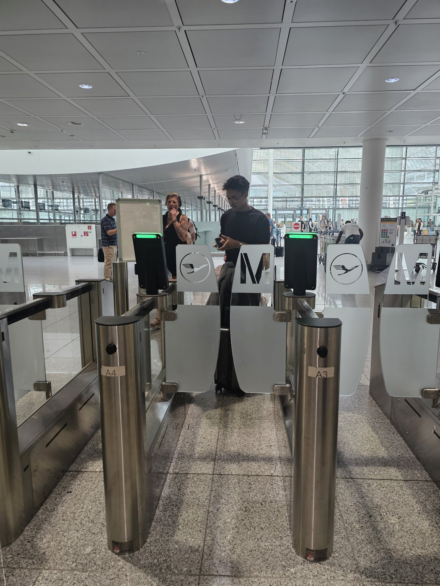
Ini bagian yang tidak pernah masuk hitungan waktu memesan tiket murah satu per satu. Bukan soal uangnya — soal bahwa rombongan berhenti jadi rombongan tepat di saat semuanya paling berantakan.
Papan transfer jam 16.28, dan satu kata di baris bawahnya
Sudah di dalam, tinggal menunggu. Lalu papan Lufthansa di atas lorong memberi kabar sore ini, dan isinya bukan cuma soal kami.
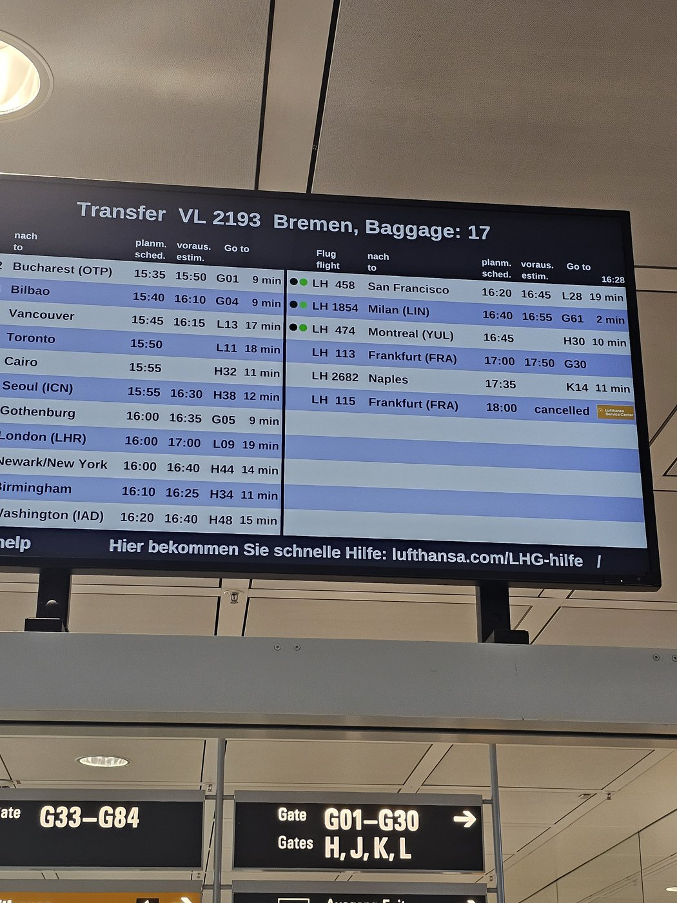
Baris kami: LH 113, Frankfurt, terjadwal 17.00, perkiraan 17.50, gerbang G30. Molor lima puluh menit.
Tapi baris di bawahnya yang bikin diam. LH 115, Frankfurt, jam 18.00 — cancelled. Penerbangan Frankfurt berikutnya, yang seharusnya jadi jaring pengaman kalau kami ketinggalan, dihapus sore itu juga. Dan hampir semua baris di papan itu punya dua jam berbeda: San Francisco molor 25 menit, Milan 15 menit, London yang lain molor satu jam penuh. Alasan yang beredar sore itu satu: cuaca buruk.
Dan di situ ada ironi yang pahit, kalau diingat catatan kemarin. Di Hari 10 halaman ini menulis panjang soal EU261 — hak kompensasi €250 per orang untuk penerbangan yang dibatalkan. Termasuk satu poin: kompensasinya gugur kalau penyebabnya di luar kendali maskapai — dan cuaca ekstrem persis contoh pertamanya.
Jadi dua hari berturut-turut kena, dengan status yang berbeda sama sekali: pembatalan kemarin kemungkinan bisa diklaim; keterlambatan hari ini kemungkinan besar tidak. Aturan yang sama, hasil yang berlawanan, cuma karena penyebabnya beda.
Jam 17.38
Satu jam kemudian, di depan gerbangnya sendiri, angkanya berubah lagi — dua-duanya.
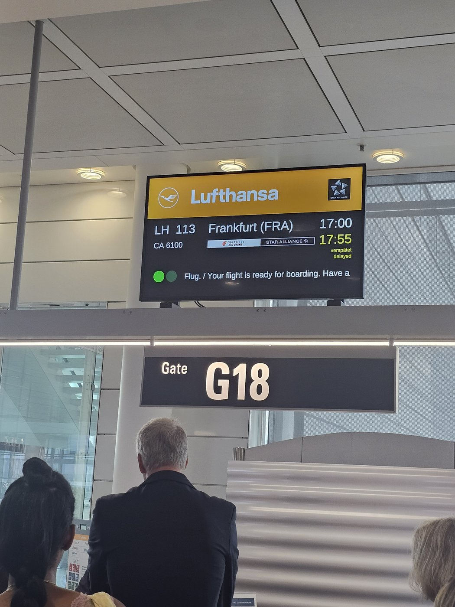
Dua pelajaran kecil sekaligus dari satu layar. Pertama, jam perkiraan itu bergerak, dan yang berlaku selalu yang paling baru. Kedua, dan ini yang lebih sering bikin orang lari-lari: gerbangnya berubah. Papan pertama menulis G30, papan di gerbangnya menulis G18. Kalau tadi kami duduk santai di dekat G30 karena percaya papan jam setengah lima, ceritanya bisa lain.
Lalu hitungannya. Rencana pengganti hasil pertempuran semalam berbunyi begini:
Dua puluh menit, dari pintu pesawat di satu terminal ke pintu pesawat di terminal lain, di bandara tersibuk Jerman, sambil membawa boarding pass maskapai yang berbeda. Dan penerbangan Frankfurt berikutnya sore itu sudah dicoret dari papan.
Papan gerbangnya sendiri, dengan tenang, menulis kalimat yang di keadaan itu terdengar seperti lelucon: “Your flight is ready for boarding. Have a…”
Diselamatkan justru oleh keterlambatan kedua
Pesawatnya berangkat, dan sepanjang jalan yang dilakukan cuma satu: menghitung. Lalu di bawah sayap muncul kota yang bikin hitungannya terasa nyata — gugusan gedung tinggi di tepi sungai, dengan barisan perbukitan biru di kejauhan.
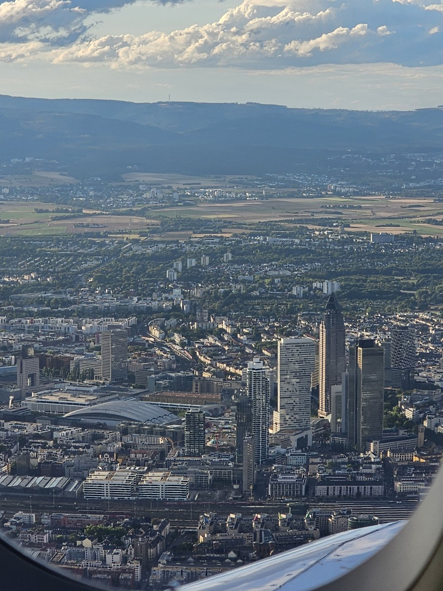
Mendarat lebih dari satu jam lebih lambat dari jadwal. Dan satu-satunya alasan masih ada harapan sama sekali adalah kabar yang di hari biasa terdengar buruk: penerbangan Frankfurt–London-nya ikut molor.
Jadi jeda yang di atas kertas tinggal dua puluh menit berubah jadi sekitar tiga puluh menit. Tiga puluh menit untuk sesuatu yang biasanya butuh satu jam.
Terminal 1 ke Terminal 3, plus satu perbatasan yang tidak masuk hitungan siapa pun
Tidak ada satu pun foto di bagian ini, dan alasannya sederhana: tidak ada tangan yang menganggur.
Rutenya begini. Mendarat di Terminal 1, pesawat berikutnya di Terminal 3, dan di Frankfurt jarak itu bukan urusan jalan kaki — harus naik kereta antar-terminal. Jadi bentuknya: lari ke stasiunnya, naik keretanya, lalu lari lagi begitu pintunya membuka.
Tapi yang paling banyak memakan waktu bukan jaraknya, melainkan satu hal yang hampir selalu lupa dihitung orang: pemeriksaan paspor.
Munich ke Frankfurt itu penerbangan dalam negeri — satu negara, dan di dalam wilayah Schengen, jadi tidak ada pemeriksaan apa pun waktu berangkat. Rasanya seperti naik pesawat domestik Jakarta–Surabaya. Tapi penerbangan berikutnya, Frankfurt ke London, keluar dari Schengen dan masuk ke negara di luar Uni Eropa. Artinya di antara dua pesawat itu ada perbatasan yang harus dilewati, lengkap dengan antreannya.
Dan antrean itulah yang berdiri di depan kami, panjang, sementara jam terus jalan.
Jadi terpaksa pakai muka tebal: minta izin ke orang-orang di depan, satu per satu, untuk menyelak. Dan ini perlu dicatat jujur — menyelak antrean adalah salah satu hal yang paling tidak disukai orang Eropa. Bukan sekadar tidak sopan; di banyak tempat itu dianggap pelanggaran yang serius. Yang menyelamatkan cuma satu: izinnya diminta, bukan diambil. Menjelaskan keadaannya, meminta maaf, dan menunggu diangguki — satu per satu, sepanjang antrean.
Entah bagaimana persisnya, tapi bisa. Sampai di pintu pesawat, dan ternyata tinggal kami yang ditunggu. Duduk, sabuk dipasang, dan tidak lama kemudian pesawatnya lepas landas.
Dan alasannya masuk akal justru karena kami berhasil
Mendarat di Heathrow. Lega — dan lega itu bertahan persis sampai ban berjalan bagasi berhenti berputar.
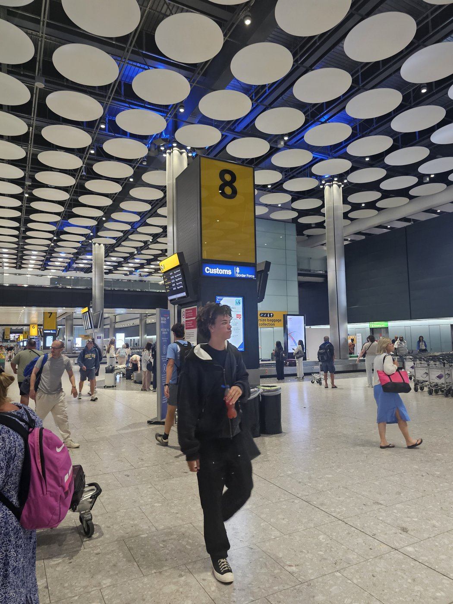
Empat koper yang tadi siang ditimbang sendiri, ditempeli label sendiri, dan diangkat sendiri ke ban berjalan di Munich — tidak ada satu pun yang keluar.
Jadi jalan ke konter Arrivals Customer Assistance, yang di terminal ini berdiri persis di ujung aula kedatangan, dengan tulisan besar di dindingnya: “We’re here to help.”
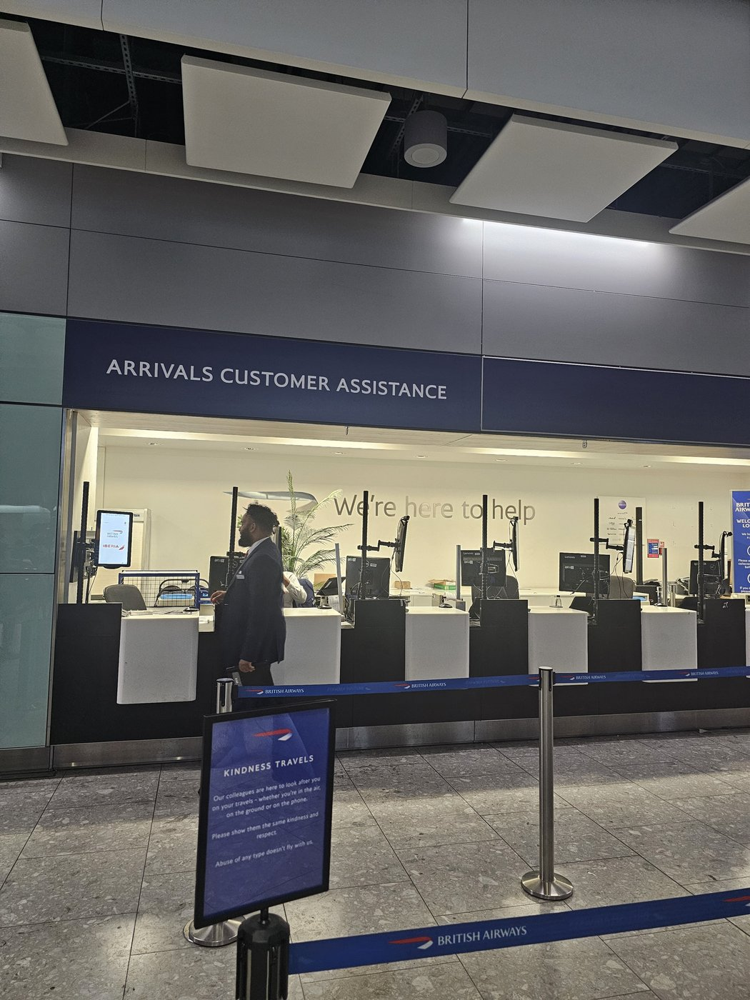
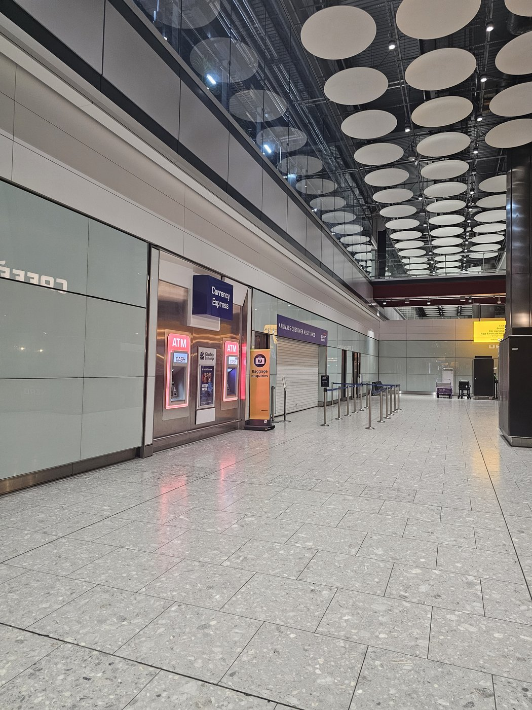
Jawabannya keluar cepat, dan begitu didengar, logikanya justru masuk akal sampai bikin kesal: kopernya tertinggal di Frankfurt.
Kemungkinan besar sengaja diturunkan — karena sistemnya menghitung bahwa penumpang dengan jeda transit setipis itu tidak akan sempat pindah pesawat, dan koper yang pemiliknya tidak ikut terbang memang harus diturunkan. Prosedur yang benar, berdasarkan tebakan yang wajar.
Cuma tebakannya meleset. Kami sempat. Kopernya yang tidak.
Sisanya prosedur: mengisi formulir laporan bagasi tertunda, mencocokkan nomor label yang tadi dicetak sendiri di Munich, memastikan alamat pengiriman dan nomor telepon benar. Dijanjikan koper sampai besok pagi, diantar ke penginapan. Dan satu kalimat lagi dari petugasnya yang ternyata penting: silakan beli baju dan keperluan pribadi seperlunya.
Konfirmasinya masuk lewat surel, lengkap dengan nomor rujukan laporan dan tautan ke portal pelacakan.
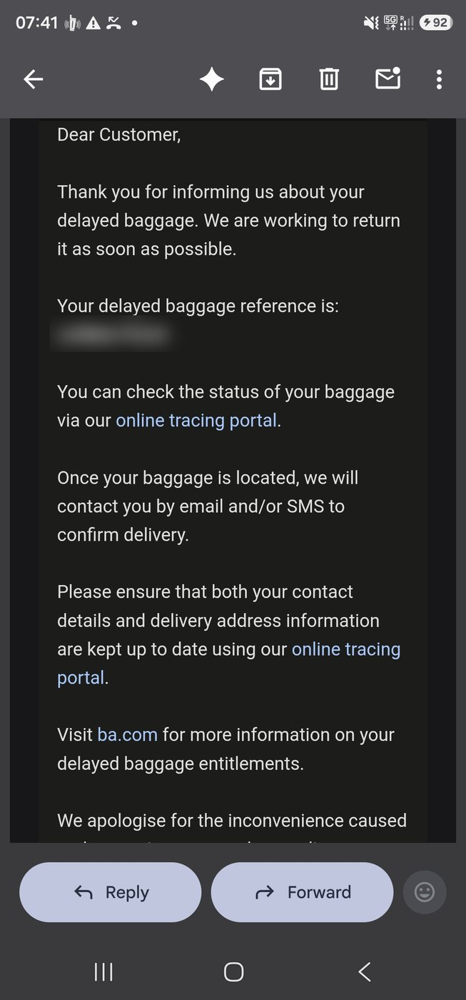
Kata entitlements itu bukan basa-basi. Untuk bagasi yang tertunda, penumpang punya hak atas penggantian pengeluaran yang wajar selama menunggu — pakaian dan keperluan pribadi termasuk di dalamnya. Aturannya berbeda sama sekali dari EU261 yang ditulis di Hari 10, dan yang penting: pengecualian cuaca tidak berlaku di sini.
Jadi kalau bagasimu tertunda, simpan semua struknya. Bukan supaya bisa belanja sepuasnya — penggantiannya memang dibatasi “wajar” dan “seperlunya” — tapi karena tanpa struk, tidak ada yang bisa diajukan sama sekali.
Empat orang, nol koper, satu supermarket 24 jam
Sebelum bisa ke mana-mana, masih ada satu orang yang ditunggu: Justin, yang tadi berangkat dari Munich langsung ke London. Dia mendarat belakangan, dan berkumpul dulu jadi prioritas.
Baru setelah itu berangkat mencari toko yang buka 24 jam. Yang ketemu: ASDA di kawasan Park Royal, London barat.
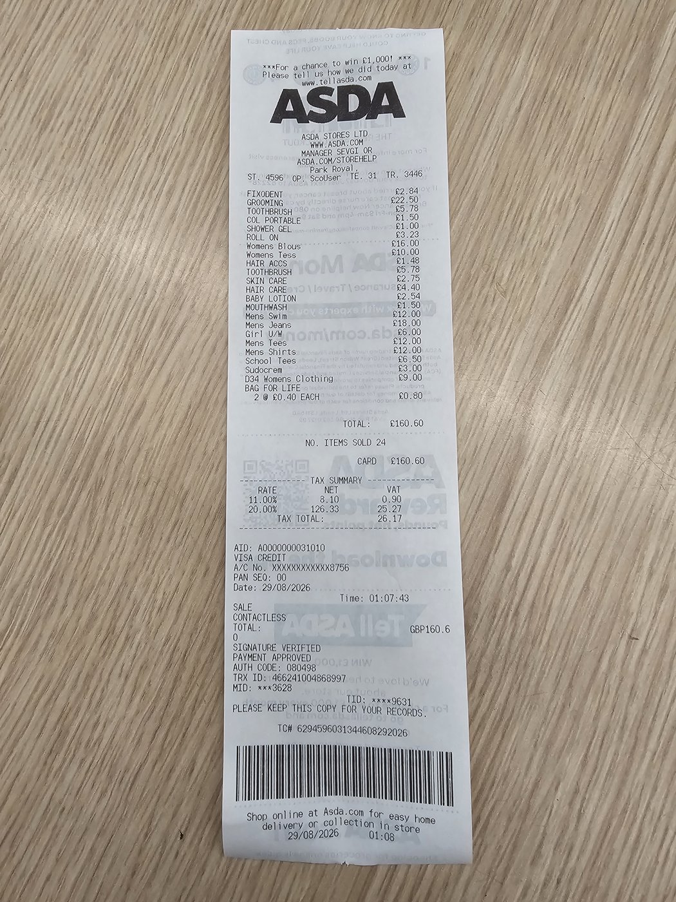
Isinya, dibaca dari atas ke bawah, adalah potret paling jujur tentang apa yang dibutuhkan empat orang yang tiba-tiba tidak punya koper:
Dua baris paling kecil di struk itu justru yang paling banyak bercerita. Dua kantong belanja seharga £0,40 — karena benar-benar tidak ada wadah apa pun untuk membawa barang. Dan kaus seragam sekolah, yang jelas bukan pilihan gaya, melainkan satu-satunya kaus polos yang tersedia di rak jam satu pagi.
Satu catatan pahit lagi, dan ini menyambung langsung ke urusan tadi siang. Di struk itu tertulis PPN £26,17. Berbeda dengan belanja di Austria yang formulirnya sudah disiapkan sejak Parndorf, PPN yang dibayar turis di Inggris tidak bisa diminta kembali — skema tax refund untuk pengunjung di negara ini sudah dihapus sejak 2021.
Jadi dalam satu hari: refund pajak Austria hangus karena tidak sempat, dan pajak Inggris memang tidak ada refund-nya sama sekali.
Rute ketiga, dan satu-satunya yang tidak sampai malam itu
Kabar terakhir malam itu datang dari rute yang ketiga. Annette, yang dijadwalkan lewat Paris, kena pola yang sama persis: penerbangan Munich–Paris ikut molor, dan waktu tersisa untuk pindah pesawat di Charles de Gaulle cuma lima belas menit.
Lima belas menit tidak bisa. Dia tertahan di Paris, dapat hotel dari maskapai, dan baru terbang ke London besok pagi.
Jadi kalau ditotal, tiga rute pengganti yang dibuat sistem semalam berakhir begini:
Satu pola kelihatan jelas dari tabel itu, dan pantas diingat baik-baik waktu memesan tiket: rute tanpa transit adalah satu-satunya yang selamat utuh. Dua rute lain sama-sama kena, dan bedanya cuma seberapa parah. Penerbangan langsung sering lebih mahal — dan malam itu, selisih harganya kelihatan seperti harga yang murah.
Dan hitungan lengkap satu hari
Belanjaan masuk dua kantong plastik seharga empat puluh sen sebiji, dan rombongan yang tinggal bertiga akhirnya sampai penginapan jam 01.30 dini hari.
Hari yang dimulai jam 09.44 pagi dengan Indomie di apartemen Bavaria berakhir hampir enam belas jam kemudian, di kamar hotel London, tanpa koper.
Dan semuanya, kalau ditarik ke belakang, berpangkal pada satu pemberitahuan yang masuk menjelang tidur kemarin malam. Satu penerbangan pagi yang dibatalkan menghasilkan: satu hari yang hilang, satu klaim pajak yang hangus, empat koper yang tertinggal di negara lain, satu orang yang bermalam di kota yang salah, dan satu struk supermarket jam satu pagi.
Kalau ada satu benang yang menyambungkan seluruh Hari 11, mungkin ini: hampir semuanya dikerjakan sendiri. Mencuci sendiri, mengambil dan menimbang makan siang sendiri, memindai belanjaan sendiri, meninggalkan mobil sewaan tanpa serah terima, mencetak label bagasi sendiri lalu menempelkannya sendiri. Sistem di sini memang disusun begitu — orangnya baru muncul kalau ada yang macet.
Malam ini semuanya macet sekaligus, dan orang-orangnya memang muncul: petugas yang melepas label lama di mesin drop bagasi, petugas konter kedatangan yang mengisikan formulir, kasir ASDA jam satu pagi. Yang tidak bisa dibantu siapa pun cuma dua hal, dan dua-duanya menentukan hari ini: cuaca di atas Frankfurt, dan tiga puluh menit yang harus dilarikan sendiri.
Besok koper dijanjikan datang, dan Annette dijanjikan mendarat. Dua-duanya janji, dan setelah dua hari terakhir, janji sudah kehilangan sebagian bobotnya.
Kamu sendiri gimana? Pernah kejar-kejaran transit karena penerbangan pertama molor — kekejar, atau gugur di gerbang? Ceritanya ditunggu di kolom komentar di bawah foto mana pun di halaman ini, cukup isi nama.